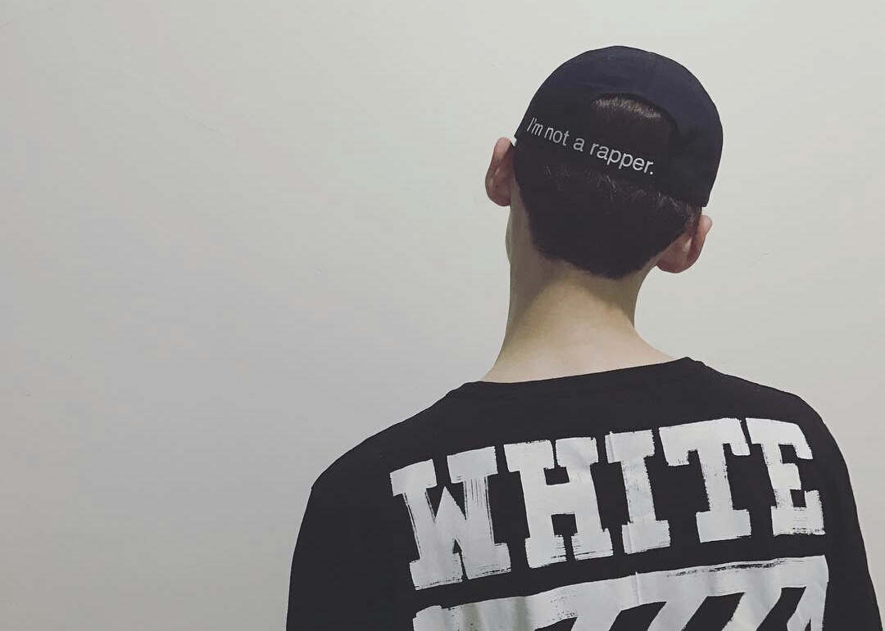

hello world
这是baibailp的第一个网页，这个网页托管在github上，介绍关于白敬亭的一些个人资料，欢迎大家访问！

白敬亭，1993年10月15日出生于北京市怀柔区，中国内地男演员，毕业于首都师范大学音乐学院。 2014年，因参
演搜狐自制网剧《匆匆那年》，饰演男二号“乔燃”一角受到关注。2015年7月，参演明晓溪同名小说改编电视剧
《旋风少女》，在剧中饰演喻初原；2015年10月，参与的自然旅游纪实真人秀《跟着贝尔去冒险》播出。2016年，
参与的明星推理综艺秀《明星大侦探》播出；4月22日，主演的青春电影《谁的青春不迷茫》上映；7月15日，加
盟江苏卫视真人秀《我们战斗吧》。2017年年初，参与《明星大侦探第二季》录制；同年1月，参与的真人秀
《触不到的TA》播出；4月22日，出任第七届中国大学生电视节青春代言人；6月11日主演电视剧《夏至未至》
在湖南卫视开播，饰演陆之昂；9月起，参与《明星大侦探第三季》录制 。2018年2月2日，参加的《二十四小
时第三季》在浙江卫视播出。